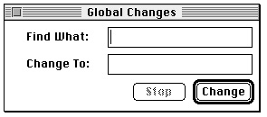

Legacy Document
Important: The information in this document is obsolete and should not be used for new development.
Important: The information in this document is obsolete and should not be used for new development.


Handling Events in Alert and Dialog Boxes
The next two sections explain how the Dialog Manager uses the Control Manager to handle events in controls automatically and how it uses TextEdit to handle events in editable text items automatically. The information in these two sections, "Responding to Events in Controls" and "Responding to Events in Editable Text Items," applies to all alert boxes and all types of dialog boxes: modal, modeless, and movable modal.To display and handle events in alert boxes, you can use the Dialog Manager functions
Alert,NoteAlert,CautionAlert, andStopAlert. The Dialog Manager handles all of the events generated by the user until the user clicks a button (typically the OK or Cancel button). When the user clicks a button, the alert box functions invert the button that was clicked, close the alert box, and report the user's selection to your application. Your application is responsible for performing the appropriate action associated with that button. This is described in detail in "Responding to Events in Alert Boxes" beginning on page 6-74.For modal dialog boxes, you use the
ModalDialogprocedure. The Dialog Manager handles most of the user interaction until the user selects an item. TheModalDialogprocedure then reports that the user selected an enabled item, and your application is responsible for performing the action associated with that item. Your application typically callsModalDialogrepeatedly, responding to clicks on enabled items as reported byModalDialog, until the user clicks OK or Cancel. This is described in detail in "Responding to Events in Modal Dialog Boxes" beginning on page 6-75.For alert boxes and modal dialog boxes, you should also supply an event filter function as one of the parameters to the alert box functions or the
ModalDialogprocedure. As the user interacts with the alert or modal dialog box, these routines pass events to your event filter function before handling each event. Your event filter function can handle any events not handled by the Dialog Manager or, if necessary, can choose to handle events normally handled by the Dialog Manager. This is described in detail in "Writing an Event Filter Function for Alert and Modal Dialog Boxes" beginning on page 6-79.To handle events in modeless or movable modal dialog boxes, you can use the
IsDialogEventfunction to determine whether the event occurred while a dialog box was the frontmost window. For every type of event that occurs when the dialog box is active (including null events),IsDialogEventreturnsTRUE; otherwise, it returnsFALSE. WhenIsDialogEventreturnsTRUE, you can use theDialogSelectfunction to handle key-down events in editable text items automatically, to handle update and activate events automatically, and to report the enabled items that the user clicks. You then respond appropriately to clicks in your active items.Alternatively, you can handle events in modeless and movable modal dialog boxes much as you handle events in other windows. That is, when you receive an event you can first determine the type of event that occurred and then take the appropriate action according to which window is in front. If a modeless or movable modal dialog box is in front, you can provide code that takes any actions specific to that dialog box and call the
DialogSelectfunction to handle any events that your code doesn't handle. The sections "Responding to Mouse Events in Modeless and Movable Modal Dialog Boxes" beginning on page 6-82, "Responding to Keyboard Events in Modeless and Movable Modal Dialog Boxes" beginning on page 6-87, and "Responding to Activate and Update Events in Modeless and Movable Modal Dialog Boxes" beginning on page 6-90 all take this alternate approach.Responding to Events in Controls
The Dialog Manager greatly simplifies the work necessary for you to implement buttons, checkboxes, pop-up menus, and radio buttons. For alert boxes and all types of dialog boxes--modal, modeless, and movable modal--the Dialog Manager uses Control Manager routines to display controls automatically, highlight controls appropriately, and report to your application when mouse-down events occur within controls. For example, when the user moves the cursor to an enabled button and holds down the mouse button, the Dialog Manager uses the Control Manager functionTrackControlto invert the button. When the user releases the mouse button with the enabled button still inverted, the Dialog Manager usesTrackControlto report which item was clicked. Your application then responds appropriately--for example, by performing the operation associated with the OK button, by deselecting any other radio button when a radio button is clicked, or by canceling the current operation when the Cancel button is clicked.For clicks in checkboxes, pop-up menus, and radio buttons, your application usually uses the Control Manager routines
GetControlValueandSetControlValue
to get and appropriately set the items' values. The chapter "Control Manager" in this book explains these routines in detail, but this chapter also offers examples of how
to use these routines in your alert and dialog boxes. Because the Control Manager does not know how radio buttons are grouped, it doesn't automatically turn one off when
the user clicks another one. Instead, it's up to your application to handle this by using theGetControlValueandSetControlValueroutines.When the user clicks the OK button, your application performs whatever action is necessary according to the values returned by
GetControlValuefor each of the various checkboxes and radio buttons displayed in your alert or dialog box.When
ModalDialogandDialogSelectcallTrackControl, they do not allow you to specify any special action procedures necessary for anything more complex than a button, radio button, or checkbox. If you need a more complex control that, for example, measures how long the user holds down the mouse button or how far the user has moved an indicator, you can create your own control (or picture or application-defined item that draws a control-like object) in your dialog box. If you use theModalDialogprocedure, you must then provide an event filter function that appropriately handles events within that item, and if you use theDialogSelectfunction, you must test for and respond to those events yourself. Alternatively, you can use Window Manager routines to display an appropriate window and then use the Control Manager to create and manage such complex controls yourself. See the chapters "Window Manager" and "Control Manager" in this book for more information.Responding to Events in Editable Text Items
When the user enters or edits text in an editable text item in your dialog boxes, the Dialog Manager calls TextEdit to handle the events automatically. (You generally shouldn't include editable text items in alert boxes.) You typically disable editable text items because you generally don't need to be informed every time the user types a character or clicks one of them. Instead you need to determine the text only when the OK button is clicked. As illustrated in Listing 6-12 on page 6-49, useGetDialogItemTextto determine the final value of the editable text item after the user clicks the OK button.When you use the
ModalDialogprocedure to handle events in modal dialog boxes and when you use theDialogSelectfunction for modeless or movable modal dialog boxes, the Dialog Manager calls TextEdit to handle keystrokes and mouse actions within editable text items, so that
If your modeless or movable modal dialog box contains any editable text items, call
- when the user clicks the item, a blinking vertical bar appears that indicates an insertion point where text may be entered
- when the user drags over text in the item, the text is highlighted; when the user double-clicks a word, the word is highlighted; the highlighted selection is then replaced by what the user types
- when the user holds down the Shift key while clicking or dragging, the highlighted selection is extended or shortened appropriately
- when the user presses the Backspace key, the highlighted selection or the character preceding the insertion point is deleted
- when the user presses the Tab key, the cursor automatically advances to the next editable text item in the item list resource, wrapping around to the first if there are no more items
DialogSelecteven whenWaitNextEventreturnsFALSE. This is necessary because theDialogSelectfunction calls theTEIdleprocedure to make the text cursor blink within your editable text items during null events; otherwise, the text cursor will not blink. Listing 6-25 illustrates an application-defined routine,DoIdle, that callsDialogSelectwhenever the application receives null events while its modeless
dialog box is the frontmost window.Listing 6-25 Using
DialogSelectduring null events
PROCEDURE DoIdle (event: EventRecord); VAR window: WindowPtr; windowType: Integer; itemHit: Integer; result: Boolean; BEGIN window := FrontWindow; {determine which type of window--document, } { modeless dialog box, etc.--is in front} windowType := MyGetWindowType(window); CASE windowType OF kMyDocWindow: {document window is frontmost} ; {see examples in "Event Manager" chapter} kMyGlobalChangesModelessDialog: {modeless dialog is frontmost} result := DialogSelect(event, window, itemHit); END; {of CASE} END;Generally, your application should handle menu bar access when you display dialog boxes containing editable text items. Leave your Edit menu enabled, and use theDialogCut, DialogCopy, DialogPaste, and DialogDelete procedures to support the Cut, Copy, Paste, and Clear commands and their keyboard equivalents. You should also provide your own code to support the Undo command."Adjusting Menus for Modal Dialog Boxes" beginning on page 6-61 and "Adjusting Menus for Movable Modal and Modeless Dialog Boxes" on page 6-66 describe how to allow users to access your Edit menu when you display dialog boxes.If you don't supply your own event filter function and the user presses the Return or Enter key while a modal dialog box is onscreen, the Dialog Manager treats the event as a click on the default button (that is, the first item in the list) regardless of whether the dialog box contains an editable text item. If your event filter function responds to the user pressing Return and Enter by moving the cursor in editable text items, don't display a bold outline around any buttons. If your event filter function responds to the user pressing Return and Enter as if the user clicks the default button, then you should display a bold outline around the default button. See "Writing an Event Filter Function for Alert and Modal Dialog Boxes" beginning on page 6-79 for an example of how to map the Return and Enter keys to the default button in your dialog boxes.
Initially, an editable text item may contain default text or no text. You can provide default text either by specifying a text string as the last element for that item in the item list resource or by using the
SetDialogItemTextprocedure, which is described on page 6-131.When a dialog box that contains editable text items is first displayed, the insertion
point usually appears in the first editable text item in the item list resource. You may instead want to use theSelectDialogItemTextprocedure so that the dialog box appears with text selected, or so that an insertion point or a text selection reappears if
the user makes an error while entering text. For example, the user who accidentally types nonnumeric input when a number is required can be given the opportunity to type the entry again. TheSelectDialogItemTextprocedure is described in detail on
page 6-131.By default, the Dialog Manager displays editable text items in the system font. To maintain visual consistency across applications for your users and to make it easier to localize your application, you should not change the font or font size.
Responding to Events in Alert Boxes
After displaying an alert box or playing an alert sound, theAlert,StopAlert,CautionAlert, andNoteAlertfunctions call theModalDialogprocedure to handle events automatically for you.The
ModalDialogprocedure, in turn, gets each event by calling the Event Manager functionGetNextEvent. If the event is a mouse-down event outside the content region of the alert box,ModalDialogemits the system alert sound and gets the next event.The
Alert,StopAlert,CautionAlert, andNoteAlertfunctions continue callingModalDialoguntil the user selects an enabled control (typically a button). At this time these functions remove the alert box from the screen and return the item number of the selected control. Your application then responds as appropriate for a click on this item.For example, the code that supports the alert box displayed in Figure 6-39 must respond to three different events--one for each button that the user may click.
Figure 6-39 Three buttons for which
CautionAlertreports events
Listing 6-9 on page 6-47 shows an application-defined routine, named
MyCloseDocument, for the Close command. If the document has been modified
since the last save,MyCloseDocumentdisplays the alert box illustrated in Figure 6-39 before closing the window. AfterMyCloseDocumentdisplays the caution alert, it
tests for the item number thatCautionAlertreturns after it removes the alert box.
If the user clicks the Save button,CautionAlertreturns its item number, andMyCloseDocumentcalls other application-defined routines to save the file, close the file, and close the window. If the user clicks the Don't Save button,MyCloseDocumentcloses the window without saving the file. The only other possible response is for the user to click the Cancel button, in which caseMyCloseDocumentdoes nothing--the Dialog Manager removes the alert box, andMyCloseDocumentsimply leaves the document window as it is.The standard event filter function allows users to press the Return or Enter key in lieu of clicking the default button. When one of these keys is pressed, the standard event filter function returns
TRUEtoModalDialog, which in turn causesAlert,StopAlert,CautionAlert, andNoteAlertto return the item number of the default button. When you write your own event filter function, it should emulate the standard filter function by responding in this way to keyboard events involving the Return and Enter keys.For events inside the alert box,
ModalDialogpasses the event to an event filter function before handling the event. The event filter function provides a secondary event-handling loop for handling events thatModalDialogdoesn't handle and for overriding events thatModalDialogwould otherwise handle. You should provide a simple event filter function for every alert box and modal dialog box in your application.You specify a pointer to your event filter function in the second parameter to the
Alert,StopAlert,CautionAlert, andNoteAlertfunctions. In theMyCloseDocumentroutine shown on page 6-47, a pointer to theMyEventFilterfunction is specified. In most cases, you can use the same event filter function in every one of your alert and modal dialog boxes. An example of a simple event filter function that allows background applications to receive update events and performs the other necessary event handling is provided in "Writing an Event Filter Function for Alert and Modal Dialog Boxes" beginning on page 6-79.Unless your event filter function handles the event in its own way and returns
TRUE,ModalDialoghandles the event inside the alert box as follows:
- In response to an activate or update event for the alert box,
ModalDialogactivates or updates its window.- If the user presses the mouse button while the cursor is in a control, the Control Manager function
TrackControltracks the mouse. If the user releases the
mouse button while the cursor is in an enabled control,Alert,StopAlert,CautionAlert, andNoteAlertremove the alert box and return the control's
item number. (Generally, buttons should be the only controls you use in alert boxes.)- If the user presses the mouse button while the cursor is in any enabled item other than a control,
Alert,StopAlert,CautionAlert, andNoteAlertremove the alert box and return the item number. (Generally, button controls should be the only enabled items in alert boxes.)- If the user presses the mouse button while the cursor is in a disabled item, or if it is
in no item, or if any other event occurs,Alert,StopAlert,CautionAlert, andNoteAlertdo nothing.
Responding to Events in Modal Dialog Boxes
Call theModalDialogprocedure immediately after displaying a modal dialog box.
This procedure repeatedly handles events inside the modal dialog box until an event involving an enabled item--such as a click in a radio button--occurs. If the event is a mouse-down event outside the content region of the dialog box,ModalDialogemits the system alert sound and gets the next event. After receiving an event involving an enabled item,ModalDialogreturns the item number. Normally you then do whatever is appropriate in response to an event in that item. Your application should continue callingModalDialoguntil the user selects the OK or Cancel button, at which point your application should close the dialog box.For example, if the user clicks a radio button, your application should get the value
of that button, turn off any other selected radio button within its group, and callModalDialogagain to get the next event. If the user clicks the Cancel button, your application should restore the user's work to its state just before the user invoked the dialog box, and then your application should remove the dialog box from the screen.
The code that supports the modal dialog box shown in Figure 6-40 must respond to events in four controls: two checkboxes and two buttons.
- Note
- Do not use
ModalDialogfor modeless or movable modal
dialog boxes.
Figure 6-40 Four items for which
ModalDialogreports events
Listing 6-26 illustrates an application-defined routine, MySpellCheckDialog, that responds to events in these four controls.
Listing 6-26 Responding to events in a modal dialog box
FUNCTION MySpellCheckDialog: OSErr; VAR docWindow: WindowPtr; ignoreCapsCheck: Boolean; ignoreSlangCheck: Boolean; spellDialog: DialogPtr; itemHit, itemType: Integer; itemHandle: Handle; itemRect: Rect; capsVal: Integer; slangVal: Integer; event: EventRecord; BEGIN capsVal := 0; slangVal := 0; ignoreCapsCheck := FALSE; ignoreSlangCheck := FALSE; MySpellCheckDialog := kSuccess;{assume success} docWindow := FrontWindow; {get front window} IF docWindow <> NIL THEN DoActivate(docWindow, FALSE, event); {deactivate document window} spellDialog := GetNewDialog(kSpellCheckID, NIL, Pointer(-1)); IF spellDialog = NIL THEN BEGIN MySpellCheckDialog := kFailed; Exit(MySpellCheckDialog); END; MyAdjustMenus; {adjust menus as needed} GetDialogItem(spellDialog, kUserItem, itemType, itemHandle, itemRect); SetDialogItem(spellDialog, kUserItem, itemType, Handle(@MyDrawDefaultButtonOutline), itemRect); ShowWindow(spellDialog); {show dialog box with default button outlined} REPEAT ModalDialog(@MyEventFilter, itemHit); {get events} IF itemHit = kAllCaps THEN {user clicked Ignore Words in All Caps} BEGIN {get the control handle to the checkbox} GetDialogItem(spellDialog, kAllCaps, itemType, itemHandle, itemRect); {get the last value of the checkbox} capsVal := GetControlValue(ControlHandle(itemHandle)); {toggle the value of the checkbox} capsVal := 1 - capsVal; {set the checkbox to the new value} SetControlValue(ControlHandle(itemHandle), capsVal); END; IF itemHit = kSlang THEN {user clicked Ignore Slang Terms} BEGIN {get checkbox's handle, get its value, toggle it, then reset it} GetDialogItem(spellDialog, kSlang, itemType, itemHandle, itemRect); slangVal := GetControlValue(ControlHandle(itemHandle)); slangVal := 1 - slangVal; SetControlValue(ControlHandle(itemHandle), slangVal); END; UNTIL ((itemHit = kSpellCheck) OR (itemHit = kCancel)); DisposeDialog(spellDialog); {close the dialog box} IF itemHit = kSpellCheck THEN {user clicked Spell Check button} BEGIN IF capsVal = 1 THEN {user wants to ignore all caps} ignoreCapsCheck := TRUE; IF slangVal = 1 THEN {user wants to ignore slang} ignoreSlangCheck := TRUE; {now start the spell check} SpellCheckMyDoc(ignoreCapsCheck, ignoreSlangcheck); END; END;TheMySpellCheckDialogroutine callsModalDialogimmediately after usingGetNewDialogto create and display the dialog box. TheMySpellCheckDialogroutine repeatedly responds to events in the two checkboxes until the user clicks either the Spell Check or the Cancel button. When the user clicks either of the checkboxes (which are the third and fourth items in the item list resource),MySpellCheckDialoguses theGetDialogItemprocedure to get a handle to the checkbox. TheMySpellCheckDialogroutine coerces this handle to a control handle and passes
it to the Control Manager functionGetControlValueto get the last value of the control (1 if the checkbox was selected or 0 if it was unselected). Subtracting this
value from 1,MySpellCheckDialogderives a new value for the control. ThenMySpellCheckDialogpasses this value to the Control Manager procedureSetControlValueto set the new value. The Control Manager responds by drawing
an X in the box if the value of the control is 1 or removing the X if the value of the
control is 0.As soon as the user clicks the Spell Check or Cancel button (which are the first and second items in the item list resource),
MySpellCheckDialogstops responding to events in the checkboxes. This routine uses theDisposeDialogprocedure (which is explained in "Closing Dialog Boxes" beginning on page 6-93) to remove the dialog box. If the user clicks the Cancel button,MySpellCheckDialogdoes no further processing of the information in the dialog box. If, however, the user clicks the Spell Check button,MySpellCheckDialogcalls another application-defined routine,SpellCheckMyDoc,to check the document for spelling errors according to the preferences that the user communicated in the checkboxes.For events inside the dialog box,
ModalDialogpasses the event to an event filter function before handling the event. In this example, the application specifies a pointer to its own event filter function,MyEventFilter. As described in the next section, your application should provide an event filter function. You can use the same event filter function in most or all of your alert and modal dialog boxes.Unless your event filter function handles the event and returns
TRUE,ModalDialoghandles the event as follows:
- In response to an activate or update event for the dialog box,
ModalDialogactivates or updates its window.- If the user presses the mouse button while the cursor is in an editable text item,
ModalDialogresponds to the mouse activity as appropriate--that is, either by displaying an insertion point or by selecting text. If a key-down event occurs and there's an editable text item, text entry and editing are handled as described in "Responding to Events in Editable Text Items" beginning on page 6-72. If the editable text item is enabled,ModalDialogreturns its item number after it receives either the mouse-down or key-down event. Normally, editable text items are disabled, and you use theGetDialogItemTextprocedure to read the information in the items only after the user clicks the OK button. Listing 6-12 on page 6-49 illustrates this technique.- If the user presses the mouse button while the cursor is in a control,
ModalDialogcalls the Control Manager functionTrackControl. If the user releases the mouse button while the cursor is in an enabled control,ModalDialogreturns the control's item number. Your application should respond appropriately; for example, Listing 6-26 uses an application-defined routine that checks the spelling of a document when the user clicks the Spell Check button.- If the user presses the mouse button while the cursor is in any other enabled item in the dialog box,
ModalDialogreturns the item's number, and your application should respond appropriately. Generally, only controls should be enabled. If your application creates a complex control--such as one that measures how far a dial is moved--your application must provide an event filter function to handle mouse events in that item.- If the user presses the mouse button while the cursor is in a disabled item or in no item, or if any other event occurs,
ModalDialogdoes nothing.
Writing an Event Filter Function for Alert and Modal Dialog Boxes
For alert and modal dialog boxes, the Dialog Manager provides a standard event filter function that checks whether the user has pressed the Enter or Return key and, if so, returns the item number of the default button. In early versions of Macintosh system software, when a single application controlled the computer, the standard event filter function for alert boxes and most modal dialog boxes was usually sufficient. However, because the standard event filter function does not permit background applications to receive or respond to update events, it is no longer sufficient.Thus, your application should provide a simple event filter function that performs these functions and also allows inactive windows to receive update events. You can use the same event filter function in most or all of your alert and modal dialog boxes.
You can also use your event filter function to handle other events that
ModalDialogdoesn't handle--such as the Command-period key-down event, disk-inserted events, keyboard equivalents, and mouse-down events (if necessary) for application-defined items that you provide.For example, the standard event filter function ignores key-down events for the Command key. When your application allows the user to access your menus after you display a dialog box, your event filter function should handle keyboard equivalents for menu commands and return
TRUE.At a minimum, your event filter function should perform the following tasks:
You can also use the event filter function to test for and respond to keyboard equivalents and more complex events--for instance, the user dragging the cursor in an application- defined item. For example, if you provide an application-defined item that requires you to measure how long the user holds down the mouse button or how far the user drags the cursor, use the event filter function to handle events inside that item.
- return
TRUEand the item number for the default button if the user presses the Return or Enter key- return
TRUEand the item number for the Cancel button if the user presses the Esc key or the Command-period key combination- update your windows in response to update events (this also allows background applications to receive update events) and return
FALSE- return
FALSEfor all events that your event filter function doesn't handle
If it seems that you will spend time replicating much of your primary event loop in this event filter function, you might consider handling all the events in your main event loop instead of using the Dialog Manager's
Alert,NoteAlert,StopAlert, andCautionAlertfunctions orModalDialogprocedure.Your own event filter function should have three parameters and return a Boolean value. For example, this is how to declare an event filter function named
MyEventFilter:
FUNCTION MyEventFilter (theDialog: DialogPtr; VAR theEvent: EventRecord; VAR itemHit: Integer): Boolean;After receiving an event that it does not handle, your function should returnFALSE. When your function returnsFALSE,ModalDialoghandles the event, which you pass
in the parametertheEvent. (Your function can also change the event to simulate a different event and returnFALSE, which passes the altered event to the Dialog Manager for handling.) If your function does handle the event, your function should returnTRUEas a function result and, in theitemHitparameter, the number of the item that it handled. TheModalDialogprocedure and, in turn, theAlert,NoteAlert,StopAlert, andCautionAlertfunctions then return this item number in their ownitemHitparameter.Because
ModalDialogcalls theGetNextEventfunction with a mask that excludes disk-inserted events, your event filter function can call the Event Manager procedureSetSystemEventMaskto accept disk-inserted events. See the chapter "Event Manager" in this book for a discussion about handling disk-inserted events.For alert and modal dialog boxes, the Dialog Manager provides a standard event filter function that checks whether the user has pressed the Enter or Return key and, if so, returns the item number of the default button. Your event filter function should always check whether the Return key or Enter key was pressed and, if so, return the item number of the default button in the
itemHitparameter and a function result ofTRUE. Your event filter function should also check whether the Esc key was pressed and, if so, return the item number for the Cancel button in theitemHitparameter and a function result ofTRUE. Your event filter function should also respond to the Command-period key-down event as if the user had clicked the Cancel button.To give visual feedback indicating which item has been selected, you should invert buttons that are activated by keyboard equivalents for all alert and dialog boxes. A
good rule of thumb is to invert a button for 8 ticks, long enough to be noticeable but
not so long as to be annoying. The Control Manager performs this action whenever
a user clicks a button, and your application should do this whenever a user presses the keyboard equivalent of a button click.For modal dialog boxes that contain editable text items, your application should handle menu bar access to allow use of your Edit menu and its Cut, Copy, Paste, Clear, and Undo commands, as explained in "Adjusting Menus for Modal Dialog Boxes" beginning on page 6-61. Your event filter function should then test for and handle mouse-down events in the menu bar and key-down events for keyboard equivalents of Edit menu commands. Your application should respond to users' choices from the Edit menu by using the procedures
DialogCut,DialogCopy,DialogPaste, andDialogDeleteto support the Cut, Copy, Paste, and Clear commands.Listing 6-27 shows
MyEventFilter, which begins by handling update events in windows other than the alert or dialog box. (By responding to update events for your application's own inactive windows in this way, you allowModalDialogto perform
a minor switch when necessary so that background applications can update their windows, too.)Next,
MyEventFilterhandles activate events. This event filter function then handles key-down events for the Return and Enter keys as if the user had clicked the default button, and it handles key-down events for the Esc key as if the user had clicked the Cancel button. (See Inside Macintosh: Text for information about character codes for the Return, Enter, and Esc keys.) Your event filter function can then include tests for other events, such as disk-inserted events and keyboard equivalents.Listing 6-27 A typical event filter function for alert and modal dialog boxes
FUNCTION MyEventFilter(theDialog: DialogPtr; VAR theEvent: EventRecord; VAR itemHit: Integer): Boolean; VAR key: Char; itemType: Integer; itemHandle: Handle; itemRect: Rect; finalTicks: LongInt; BEGIN MyEventFilter := FALSE; {assume Dialog Mgr will handle it} IF (theEvent.what = updateEvt) AND (WindowPtr(theEvent.message) <> theDialog) THEN DoUpdate(WindowPtr(theEvent.message)) {update the window behind} ELSE IF (theEvent.what = activateEvt) AND (WindowPtr(theEvent.message) <> theDialog) THEN DoActivate(WindowPtr(theEvent.message), (BAnd(theEvent.modifiers, activeFlag) <> 0), theEvent) ELSE CASE theEvent.what OF keyDown, autoKey: {user pressed a key} BEGIN key := Char(BAnd(theEvent.message, charCodeMask)); IF (key = Char(kReturnKey)) OR (key = Char(kEnterKey)) THEN BEGIN {respond as if user clicked Spell Check} GetDialogItem(theDialog, kSpellCheck, itemType, itemHandle, itemRect); {invert the Spell Check button for user feedback} HiliteControl(ControlHandle(itemHandle), inButton); Delay(kVisualDelay, finalTicks); {invert button for 8 ticks} HiliteControl(ControlHandle(itemHandle), 0); myEventFilter := TRUE; {event's being handled} itemHit := kSpellCheck; {return the default button} END; IF (key = Char(kEscapeKey)) OR {user pressed Esc key} (Boolean(BAnd(theEvent.modifiers, cmdKey)) AND (key = Char(kPeriodKey))) THEN {user pressed Cmd-pd} BEGIN {handle as if user clicked Cancel} GetDialogItem(theDialog, kCancel, itemType, itemHandle, itemRect); {invert the Cancel button for user feedback} HiliteControl(ControlHandle(itemHandle), inButton); Delay(kVisualDelay, finalTicks); {invert button for 8 ticks} HiliteControl(ControlHandle(itemHandle), 0); MyEventFilter := TRUE; {event's being handled} itemHit := kCancel; {return the Cancel button} END; {of Cancel} {handle any other keyboard equivalents here} END; {of keydown, autokey} {handle disk-inserted and other events here, as needed} OTHERWISE END; {of CASE} END;To use this event filter function for an alert box, the application specifies a pointer toMyEventFilterwhen it calls one of theAlertfunctions, as shown in Listing 6-19 on page 6-59. To use this event filter function for a modal dialog box, the application specifies a pointer toMyEventFilterwhen it callsModalDialog, as shown in
Listing 6-26 on page 6-76.Responding to Mouse Events in Modeless and
To handle events in modeless and movable modal dialog boxes, you can use the
Movable Modal Dialog BoxesIsDialogEventfunction to determine when events occur while a dialog box is the frontmost window. For such events, you can then use theDialogSelectfunction to handle key-down events in editable text items automatically, to handle update and activate events automatically, and to report the enabled items that the user clicks. You must also use additional Toolbox routines to handle other types of keyboard events and other events in the dialog box.
Alternatively, and probably most efficiently, your application can respond to events in modeless and movable modal dialog boxes by first determining the type of event that occurred and then taking the appropriate action according to which type of window is
- WARNING
- The
IsDialogEventandDialogSelectfunctions are unreliable when running in versions of system software previous to System 7.
in front. If a modeless or movable modal dialog box is in front, you can provide code
that takes any actions specific to that dialog box. You can then use theDialogSelectfunction instead of the Control Manager functionsFindControlandTrackControlto handle mouse events in your dialog boxes. TheDialogSelectfunction also handles update events, activate events, and events in editable text items. (If your modeless or movable modal dialog box contains editable text items, you should callDialogSelectduring null events to cause the text cursor to blink.)If you choose to determine whether events involve movable modal or modeless dialog boxes without the aid of the
IsDialogEventfunction, your application should be prepared to handle the following mouse events:
Figure 6-41 shows a simple modeless dialog box with editable text items.
- clicks in the menu bar, which your application has adjusted as appropriate for the dialog box. Be sure to use the procedures
DialogCut,DialogCopy,DialogPaste, andDialogDeleteto support the Cut, Copy, Paste, and Clear commands in editable text items in your dialog boxes.- clicks in the content region of an active movable modal or modeless dialog box. You can use the
DialogSelectfunction to aid you in handling the event.- clicks in the content region of an inactive modeless dialog box. In this case, your application should make the modeless dialog box active by making it the front-
most window.- clicks in the content region of an inactive window whenever a movable modal or modeless dialog box is active. For movable modal dialog boxes, your application should emit the system alert sound, whereas for modeless dialog boxes, your application should bring the inactive window to the front.
- mouse-down events in the drag region (that is, the title bar) of an active movable modal or modeless dialog box. Your application should use the Window Manager procedure
DragWindowto move the dialog box in response to the user's actions.- mouse-down events in the drag region of an inactive window when a movable
modal dialog box is active. Your application should not move the inactive window
in response to the user's actions. Instead, your application should play the system alert sound.- clicks in the close box of a modeless dialog box. Your application should dispose of or hide the modeless dialog box, whichever action is more appropriate.
Listing 6-28 illustrates an application-defined procedure that handles mouse-down events for all windows, including the modeless dialog box shown in Figure 6-41.
Figure 6-41 A modeless dialog box for which
DialogSelectreports events
Listing 6-28 Handling mouse-down events for all windows
PROCEDURE DoMouseDown (event: EventRecord); VAR part: Integer; thisWindow: WindowPtr; BEGIN {find general location of the cursor at the time of mouse-down event} part := FindWindow(event.where, thisWindow); CASE part OF {take action based on the cursor location} inMenuBar: ; {cursor in menu bar; respond with Menu Manager routines} inSysWindow: ; {cursor in a DA; use SystemClick here} inContent: {cursor in the content area of one of this app's windows} IF thisWindow <> FrontWindow THEN BEGIN {mouse-down in a window other than the front } { window--make the clicked window the front window, } { unless the front window is a movable modal dialog box} IF MyIsMovableModal(FrontWindow) THEN SysBeep(30) {emit system alert sound} ELSE SelectWindow(thisWindow); END ELSE {mouse-down in the content area of front window} DoContentClick(thisWindow, event); inDrag: {handle mouse-down in drag area} IF (thisWindow <> FrontWindow) AND (MyIsMovableModal(FrontWindow)) THEN SysBeep(30) {emit system alert sound} ELSE DragWindow(thisWindow, event.where, GetGrayRgn^^.rgnBBox); inGrow: ; {handle mouse-down in zoom box here} inGoAway: {handle mouse-down in close box here} IF TrackGoAway(thisWindow, event.where) THEN DoCloseCmd; inZoomIn, inZoomOut: ; {handle zoom box region for standard windows} END; {end of CASE} END; {of DoMouseDown}TheDoMouseDownroutine first uses the Window Manager functionFindWindowto determine approximately where the cursor is when the mouse button is pressed. When the user presses the mouse button while the cursor is in the content area of a window,DoMouseDownfirst checks whether the mouse-down event occurs in the currently active window by comparing the window pointer returned byFindWindowwith that returned by the Window Manager functionFrontWindow.When the mouse-down event occurs in an inactive window,
DoMouseDownuses another application-defined routine,MyIsMovableModal, to check whether the active window is a movable modal dialog box. If so,DoMouseDownplays the system alert sound. Otherwise,DoMouseDownuses the Window Manager procedureSelectWindow
to make the selected window active. (Although not illustrated in this book, theMyIsMovableModalroutine uses the Window Manager functionGetWVariantto determine whether the variation code for the front window ismovableDBoxProc. If so,MyIsMovableModalreturnsTRUE.) See the chapter "Window Manager" in this book for more information about theSelectWindowandGetWVariantroutines.As in this example, you must ensure that the movable dialog box is modal within your application. That is, the user should not be able to switch to another of your application's windows while the movable modal dialog box is active. Instead, your application should emit the system alert sound. Notice as well that when the mouse-down event occurs in the drag region of any window,
DoMouseDownchecks whether the drag region belongs to an inactive window while a movable modal dialog box is active. If it does,DoMouseDownagain plays the system alert sound. (However, by clicking other applica- tions' windows or by selecting other applications from the Application and Apple menus, users should be able to switch your application to the background when you display a movable modal dialog box--an action users cannot perform with fixed- position modal dialog boxes.)If a user presses the mouse button while the cursor is in the content region of the active window,
DoMouseDowncalls another application-defined routine,DoContentClick,
to further handle mouse events. Listing 6-29 shows how this routine in turn uses theDialogSelectfunction to handle the mouse-down event after the application determines that it occurs in the modeless dialog box shown in Figure 6-41 on page 6-83.Listing 6-29 Using the
DialogSelectfunction for responding to mouse-down events
PROCEDURE DoContentClick (thisWindow: windowPtr; event: EventRecord); VAR itemHit: Integer; refCon: Integer; BEGIN windowType := MyGetWindowType(thisWindow); CASE windowType OF kMyDocWindow: ; {handle clicks in document window here; see the chapter "Control } { Manager" for sample code for this case} kGlobalChangesID: {user clicked Global Changes dialog box} BEGIN IF DialogSelect(event, DialogPtr(thisWindow), itemHit) THEN BEGIN IF itemHit = kChange THEN {user clicked Change} ; {use GetDialogItem and GetDialogItemText to get } { the text strings and replace one string with the } { other here} IF itemHit = kStop THEN {user clicked Stop} ; {stop making changes here} END; END; {of CASE for kGlobalChangesID} {handle other window types here} END; {of CASE} END;In this example, when the user clicks the Change button,DialogSelectreturns its item number. Within the user's document, the application then performs a global search and replace. (Listing 6-12 on page 6-49 illustrates how an application can use theGetDialogItemandGetDialogItemTextprocedures for this purpose.) Generally, only controls should be enabled in a dialog box; therefore, your application normally responds only whenDialogSelectreturnsTRUEafter the user clicks an enabled control. For example, if the event is an activate or update event for a dialog box,DialogSelectactivates or updates it and returnsFALSE, so your application does not need to respond to the event.At this point, you may also want to check for and respond to any special events that you do not wish to pass to
DialogSelector that require special processing before you pass them toDialogSelect. You would need to do this, for example, if the dialog box needs to respond to disk-inserted events.
Listing 6-28 on page 6-84 calls one of its application-defined routines,
- IMPORTANT
- When
DialogSelectcallsTrackControl, it does not allow you to specify any action procedures necessary for a more complex control--
for example, a control that measures how long the user holds down
the mouse button or one that measures how far the user has moved
an indicator. For instances like this, you can create a picture or an application-defined item that draws a control-like object; you must then test for and respond to those events yourself before passing events toDialogSelect. Or, you can use the Control Manager functionsFindControlandTrackControlto process the mouse events inside the controls of your dialog box.DoCloseCmd, whenever the user clicks the close box of the active window. If the active window is a modeless dialog box, you might find it more efficient to hide the window rather than remove its data structures. Listing 6-30 shows how you can use the Window Manager routineHideWindowto hide the Global Changes modeless dialog box when the user clicks its close box. The next time the user chooses the Global Changes command, the dialog box is already available, in the same location and with the same text selected as when it was last used. (Listing 6-20 on page 6-60 illustrates how first to create and later redisplay this modeless dialog box.)Listing 6-30 Hiding a modeless dialog box in response to a Close command
PROCEDURE DoCloseCmd; VAR myWindow: WindowPtr; myData: MyDocRecHnd; windowType: Integer; BEGIN myWindow := FrontWindow; windowType := MyGetWindowType(myWindow); CASE windowType OF kMyGlobalChangesModelessDialog: HideWindow(myWindow); kMySpellModelessDialog: HideWindow(myWindow); kMyDocWindow: BEGIN myData := MyDocRecHnd(GetWRefCon(myWindow)); MyCloseDocument(myData); END; {of kMyDocWindow case} kDAWindow: CloseDeskAcc(WindowPeek(myWindow)^.windowKind); END; {of CASE} END;Responding to Keyboard Events in Modeless and
If you adopt the previously described strategy of determining--without the aid of the
Movable Modal Dialog BoxesIsDialogEventfunction--whether events involve movable modal or modeless dialog boxes, your application should be prepared to handle the following keyboard events:
Listing 6-31 illustrates how an application can check for keyboard equivalents whenever it receives key-down events. If the user holds down the Command key while pressing another key, the application calls another of its application-defined procedures,
- keyboard equivalents, such as Command-C to copy, to which your application should respond appropriately
- key-down events for the Return and Enter keys, to which your application should respond as if the user had clicked the default button
- key-down events for the Esc or Command-period keystrokes, to which your application should respond as if the user had clicked the Cancel button
- key-down and auto-key events in editable text items, for which your application can use the
DialogSelectfunction, which in turn calls TextEdit to handle keystrokes within editable text items automatically
DoMenuCommand, which handles keyboard equivalents for menu commands. See the chapter "Menu Manager" in this book for an example of aDoMenuCommandprocedure. Remember that when a movable modal dialog box or a modeless dialog box is active, your application should adjust the menus appropriately, and use the proceduresDialogCut,DialogCopy,DialogPaste, andDialogDeleteto support the Cut, Copy, Paste, and Clear commands in editable text items.Listing 6-31 Checking for key-down events involving the Command key
PROCEDURE DoKeyDown (event: EventRecord); VAR key: Char; BEGIN key := CHR(BAnd(event.message, charCodeMask)); IF BAnd(event.modifiers, cmdKey) <> 0 THEN BEGIN {Command key down} IF event.what = keyDown THEN BEGIN MyAdjustMenus; {adjust the menus as needed} DoMenuCommand(MenuKey(key)); {handle the menu command} END; END ELSE MyHandleKeyDown(event); END;After determining that a key-down event does not involve a keyboard equivalent, Listing 6-31 calls another of its own routines,MyHandleKeyDown, which is shown
in Listing 6-32.Listing 6-32 Checking for key-down events in a modeless dialog box
PROCEDURE MyHandleKeyDown (event: EventRecord); VAR window: WindowPtr; windowType: Integer; BEGIN window := FrontWindow; {determine the type of window--document, modeless, etc.} windowType := MyGetWindowType(window); IF windowType = kMyDocWindow THEN {key-down in doc window} BEGIN {handle keystrokes in document window here} END ELSE {key-down in modeless dialog box} MyHandleKeyDownInModeless(event, windowType); END;TheMyHandleKeyDownroutine determines what type of window is active when
the user presses a key. If a modeless dialog box is the frontmost window,MyHandleKeyDownautomatically calls another application-defined routine,MyHandleKeyDownInModeless, to respond to key-down events in modeless dialog boxes. TheMyHandleKeyDownInModelessroutine is shown in Listing 6-33.Listing 6-33 Responding to key-down events in a modeless dialog box
PROCEDURE MyHandleKeyDownInModeless(event: EventRecord; windowType: Integer); VAR key: Char; itemType: Integer; itemHandle: Handle; itemRect: Rect; finalTicks: LongInt; handled: Boolean; item: Integer; theDialog: DialogPtr; BEGIN handled := FALSE; theDialog := FrontWindow; CASE windowType OF kGlobalChangesID: {key-down in Global Changes dialog box} BEGIN key := Char(BAnd(event.message, charCodeMask)); IF (key = Char(kReturnKey)) OR (key = Char(kEnterKey)) THEN BEGIN {respond as if user clicked Change} GetDialogItem(theDialog, kChange, itemType, itemHandle, itemRect); {invert the Change button for 8 ticks for user feedback} HiliteControl(ControlHandle(itemHandle), inButton); Delay(kVisualDelay, finalTicks); HiliteControl(ControlHandle(itemHandle), 0); {use GetDialogItem and GetDialogItemText to get the text } { strings and replace one string with the other here} handled := TRUE; {event's been handled} END; IF (key = Char(kEscapeKey)) OR {user pressed Esc key} (Boolean(BAnd(event.modifiers, cmdKey)) AND (key = Char(kPeriodKey))) THEN {user typed Cmd-pd} BEGIN {handle as if user clicked Stop} GetDialogItem(theDialog, kStop, itemType, itemHandle, itemRect); {invert the Stop button for 8 ticks for user feedback} HiliteControl(ControlHandle(itemHandle), inButton); Delay(kVisualDelay, finalTicks); HiliteControl(ControlHandle(itemHandle), 0); {cancel the current operation here} handled := TRUE; {event's been handled} END; IF NOT handled THEN {let DialogSelect handle keydown events in } { editable text items} handled := DialogSelect(event, theDialog, item); END; {of case kGlobalChangesID} {handle other modeless and movable modal dialog boxes here} END; {of CASE} END;WhenMyHandleKeyDownInModelessdetermines that the front window is the Global Changes modeless dialog box, it checks whether the user pressed Return or Enter. If so,MyHandleKeyDownInModelessresponds as if the user had clicked the default button: Change. TheMyHandleKeyDownInModelessroutine uses the Control Manager procedureHiliteControlto highlight the Change button for 8 ticks. (Listing 6-27 on page 6-81 illustrates how to useHiliteControlto highlight the button from within a modal dialog box's event filter function.)When the user presses Esc or Command-period,
MyHandleKeyDownInModelessresponds as if the user had clicked the Cancel button.Finally,
MyHandleKeyDownInModelessuses theDialogSelectfunction, which in turn calls TextEdit to handle keystrokes within editable text items.Responding to Activate and Update Events in Modeless and Movable Modal Dialog Boxes
If you adopt the previously described strategy of determining--without the aid of theIsDialogEventfunction--whether events involve movable modal or modeless dialog boxes, your application should be prepared to handle activate and update events for both movable modal and modeless dialog boxes. You can useDialogSelectto assist you in handling activate and update events. For faster performance, you may instead want to use theUpdateDialogfunction when handling update events. BothDialogSelectandUpdateDialoguse the QuickDraw procedureSetPortto make the dialog box the current graphics port before redrawing or updating it.You should use the Control Manager procedure
HiliteControlto make the buttons and other controls inactive in a modeless or movable modal dialog box when you deactivate it. TheHiliteControlprocedure dims inactive buttons, radio buttons, checkboxes, and pop-up menus to indicate to the user that clicking these items has no effect while the dialog box is in the background. When you activate a modeless or movable modal dialog box again, you should useHiliteControlto make the controls active again.The application-defined
DoActivateGlobalChangesDialogroutine shown in Listing 6-34 illustrates how to useHiliteControlto make the Change button active when activating a modeless dialog box and how to make the Change and Stop buttons inactive when deactivating the dialog box.Listing 6-34 Activating a modeless dialog box
PROCEDURE DoActivateGlobalChangesDialog (window: WindowPtr; event: EventRecord); VAR activate: Boolean; handled: Boolean; item: Integer; itemType: Integer; itemHandle: Handle; itemRect: Rect; BEGIN MyCheckEvent(event); {get a valid event record to pass to DialogSelect} activate := (BAnd(event.modifiers, activeFlag) <> 0); IF activate THEN {activate the modeless dialog box} BEGIN {highlight editable text} SelectDialogItemText(window, kFindText, 0, 32767); {make the Change button active (make the Stop button active } { only during a change operation)} GetDialogItem(DialogPtr(window), kChange, itemType, itemHandle, itemRect); HiliteControl(ControlHandle(itemHandle), 0); {make Change active} {draw a bold outline around the newly activated Change button} MyDrawDefaultButtonOutline(DialogPtr(window), kChange); END ELSE {dim the Change and Stop buttons for a deactivate dialog box} BEGIN GetDialogItem(DialogPtr(window), kChange, itemType, itemHandle, itemRect); HiliteControl(ControlHandle(itemHandle), 255); {dim Change button} {draw a gray outline around the newly dimmed Change button} MyDrawDefaultButtonOutline(DialogPtr(window), kChange); GetDialogItem(DialogPtr(window), kStop, itemType, itemHandle, itemRect); HiliteControl(ControlHandle(itemHandle), 255); {dim Stop button} END; {let Dialog Manager handle activate events} handled := DialogSelect(event, window, item); MyAdjustMenus; {adjust the menus appropriately} END;TheDoActivateGlobalChangesDialogroutine usesDialogSelectto handle activate events in the modeless dialog box. In response to an activate event,DialogSelecthandles the event and returnsFALSE. TheDialogSelectfunction sets the current graphics port to the modeless dialog box whenever the user makes it active.Because
DialogSelectexpects three parameters, one of which must be an event record,DoActivateGlobalChangesDialoguses the application-defined routineMyCheckEventto verify that the event is a valid event. If it's not,MyCheckEventcreates and returns a valid event record for an activate event.Because
DialogSelectdoesn't call any draw procedures for items in response to activate events,DoActivateGlobalChangesDialogcalls the application-defined draw routineMyDrawDefaultButtonOutlineto draw either a black outline around the default button when activating the dialog box or a gray outline when deactivating it. TheMyDrawDefaultButtonOutlineroutine is shown in Listing 6-17 on page 6-59.Because users can switch out of your application when you display a movable modal dialog box, your application must handle activate events for it, too.
You can also use
DialogSelectto handle update events. In response to an update event,DialogSelectcalls the Window Manager procedureBeginUpdate, the Dialog Manager procedureDrawDialogto redraw the entire dialog box, and then the Window Manager procedureEndUpdate. However, a faster way to update the dialog box is to use theUpdateDialogprocedure, which redraws only the update region of a dialog box. As shown in Listing 6-35, you should callBeginUpdatebefore usingUpdateDialog, and then callEndUpdate.Listing 6-35 Updating a modeless dialog box
PROCEDURE DoUpdate (window: WindowPtr); VAR windowType: Integer; BEGIN windowType := MyGetWindowType(window); CASE windowType OF kMyDocWindow: ; {update document windows here} kMyGlobalChangesModelessDialog: BEGIN BeginUpdate(window); UpdateDialog(window, window^.visRgn); EndUpdate(window); END; {handle cases for other window types here} END; {of CASE} END;Closing Dialog Boxes
When you no longer need a dialog box, you can dispose of it by using either theCloseDialogprocedure if you allocated the memory for the dialog box or theDisposeDialogprocedure if you did not. Or, you can merely make it invisible by using the Window Manager procedureHideWindow.Generally, your application should not allocate memory for modal dialog boxes or movable modal dialog boxes, but it should allocate memory for modeless dialog boxes. Under these circumstances, your application should use
DisposeDialogto dispose
of either a fixed or movable modal dialog box when the user clicks the OK or Cancel button, and it should useCloseDialogto dispose of a modeless dialog box when the user clicks the close box or chooses Close from the File menu.You do not close alert boxes; the Dialog Manager does that for you automatically by calling the
DisposeDialogprocedure after the user responds to the alert box by clicking any enabled button.The
CloseDialogprocedure removes a dialog box from the screen and deletes it from the window list. It also releases the memory occupied by
The
- the data structures associated with the dialog box (such as its structure, content, and update regions)
- all the items in the dialog box (except for pictures and icons, which might be shared by other resources) and any data structures associated with them--for example, the region occupied by the scroll box of a scroll bar
CloseDialogprocedure does not dispose of the dialog record or the item list resource. UnlikeGetNewDialog,NewDialogdoes not use a copy of the item list resource. So, if you create a dialog box withNewDialog, you may want to useCloseDialogto keep the item list resource in memory even if you didn't supply a pointer to the memory.The
DisposeDialogprocedure callsCloseDialogand, in addition, releases the memory occupied by the dialog's item list resource and the dialog record. If you passedNILas a parameter toGetNewDialogorNewDialogto let the Dialog Manager allocate memory in the heap, callDisposeDialogwhen you're done with a dialog box.For modeless and movable modal dialog boxes, you might find it more efficient to hide the dialog box rather than remove its data structures. Listing 6-30 on page 6-87 uses the Window Manager routine
HideWindowto hide the Global Changes modeless dialog boxwhen the user clicks its close box. The next time the user invokes the Global Changes command, the dialog box is already available, in the same location and with the same text selected as when it was last used.
If you adjust the menus when you display a dialog box, be sure to return them to an appropriate state when you close the dialog box, as described in "Adjusting Menus for Modal Dialog Boxes" beginning on page 6-68 and "Adjusting Menus for Movable Modal and Modeless Dialog Boxes" on page 6-73.